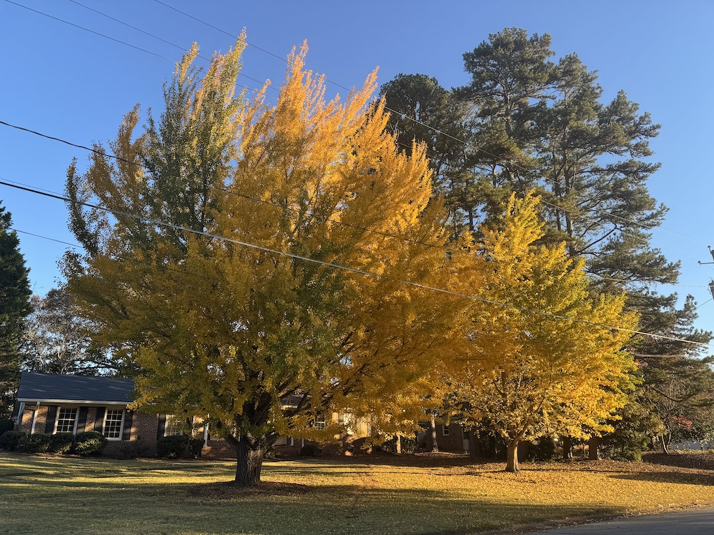
“Never doubt that a small group of thoughtful, committed citizens can change the world. Indeed, it is the only thing that ever has.” –Margaret Mead
I recently purchased Dani Donovan’s Anti-Planner, and in paging through it, came to the quote at the very end that now adorns the title of this entry. It seemed fitting, given what 2025 has brought in its wake.
It’s been the kind of year where movies like Thunderbolts, Fantastic Four, and Frozen 2 have really resonated with me; where I’m returning to deeply existential trilogies like Ann Leckie’s Ancillary Justice and Adrian Tchaikovsky’s Children of Time; where I’m constantly trying to channel Ethan Hunt’s utter inability to give up.
A week ago, I’d had this post nearly fully written, in much the same style as my last few1 However, we got the biggest curveball of the year in that final week: our second bout of COVID!
I was angry. Hell, still am. But, in trying to channel one of 2025’s many themes, I took to heart the idea that gratitude always wins, and decided to follow in the spirit of this other retrospective I came across—not to mention all the “2025 retrospective? I was there” memes—and instead make a list of everything in 2025 that I am deeply, endlessly, over-the-moon grateful for.
Some of what’s written below was cannibalized from the original post, but quite a bit was written brand-new, in-media-COVID.
Even though this post takes a decidedly optimistic and positive view on the past year, it still contains discussions around physical and mental health, existential and political ranting, and swearing. Content warning ahoy.
New gig
I won’t rehash what was probably my longest blog post of 2025, so instead I’ll summarize:
- after teaching one final spring course, I left my tenured faculty position at the University of Georgia effective August 15 of this year
- over the summer, I interviewed with, got an offer from, and accepted said offer from a little biotech company called Valo Health
- I’m a little over five months into the job change, and am absolutely loving it
- there are things I miss from UGA—people, really—but I’m grateful for the change and love where I am right now
That’s the upshot; read the post if you want more details. Plus I’m sure I’ll post about it more over the months and (hopefully!) years to come. Absolutely one of the high points of the year, no question.
Focus on health
I didn’t match my 2024 running mileage, or even my lifting frequency; both took hits. I ran just about exactly 750 miles, and lifted about exactly half of what I did in 2024. I did hit 30 miles of running in a single week again! But overall I’ll admit, it was frustrating; I’m sure my running coach has also been frustrated with how much mileage I dropped this year.
But while there were many reasons for this drop-off, there are two things in particular I want to highlight here:
- I am so, so grateful for still even being able to run and lift with the frequency and intensity that I want to. I think both are going to take off in 2026 because of the groundwork I laid in 2025, and even so: 750 miles is still more than my 2021 and 2022 combined, so yeah, I’ll take it.
- I made my own personal health a priority this year, which sometimes meant pulling back a bit on workout frequency and intensity.
Anyone who knows me is aware that my modus operandi tends to be: white-knuckle it until the problem goes away. Not super effective.
Well, this year, I turned that on its head.
- I took steps to address the long COVID issues I’ve been dealing with: meeting with several specialists, starting on multiple new medications (and weaning off other ones), and even doing some sleep therapy. I can already point to one way in which it’s all helped: the frequency with which I begin runs with shortness of breath has fallen from well over half to barely a quarter. I also have more energy in the mornings; I feel more rested, which makes getting out early easier.
- I’ve begun working with a personal trainer at the Y (so yeah, lifting will definitely take off in 2026).
- My wife and I made the decision for me to get a vasectomy2.
- COVID Round 2 was a fucking unpleasant surprise, but in the same vein as everything else, I petitioned my PCP for—and got!—a paxlovid treatment.
- Hit up multiple friends and acquaintences who have been through most of these experiences for their own thoughts and circumstances.
- Created my very first Reddit account so I could actively participate in some the communities around these experiences, and geez y’all: I know we say the internet is toxic—and it certainly has its moments—but there are still pockets of wonderful human beings to be found, if you know where to look.
There are a lot of new habits and routines I’ve had to adjust to, and that’s been annoying and stressful as shit sometimes, but it’s helped to remember that in hitting this from all sides at once, I’m giving myself the best chance I can to live the best possible life. And that’s worth being patient for.
The writer and runner half
Cathryn completed a version of her book and sent it off to beta readers, which is so freaking cool. Of course I’ve been a lousy husband and haven’t finished reading it yet, but it was amazing in its previous version and now—even though I know she had to take a lot of things out that she really liked—it’s even better.
She also juuuuuuust about hit 900 miles running this year (ok ok, technically 5 miles short, but we all know she would have knocked out those last 5 miles if not for COVID), which is another incredible milestone.
AND, on a parents-only long weekend trip to Wilmington, NC in the first weekend of December, she clinched a postpartum 10K PR at the Historic Wilmington Half (i.e. 10K). It’s been so long since we both ran a race together, to say nothing of a race together that we also traveled for, and it was a lovely weekend getaway with my favorite travel and running buddy :)
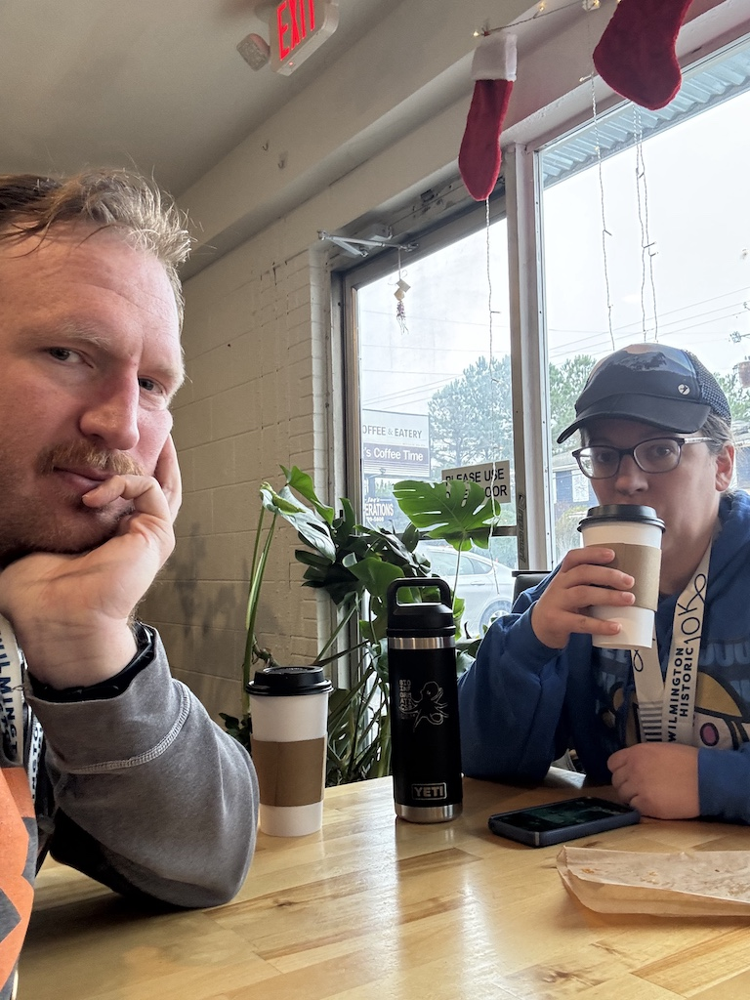
Z growing up
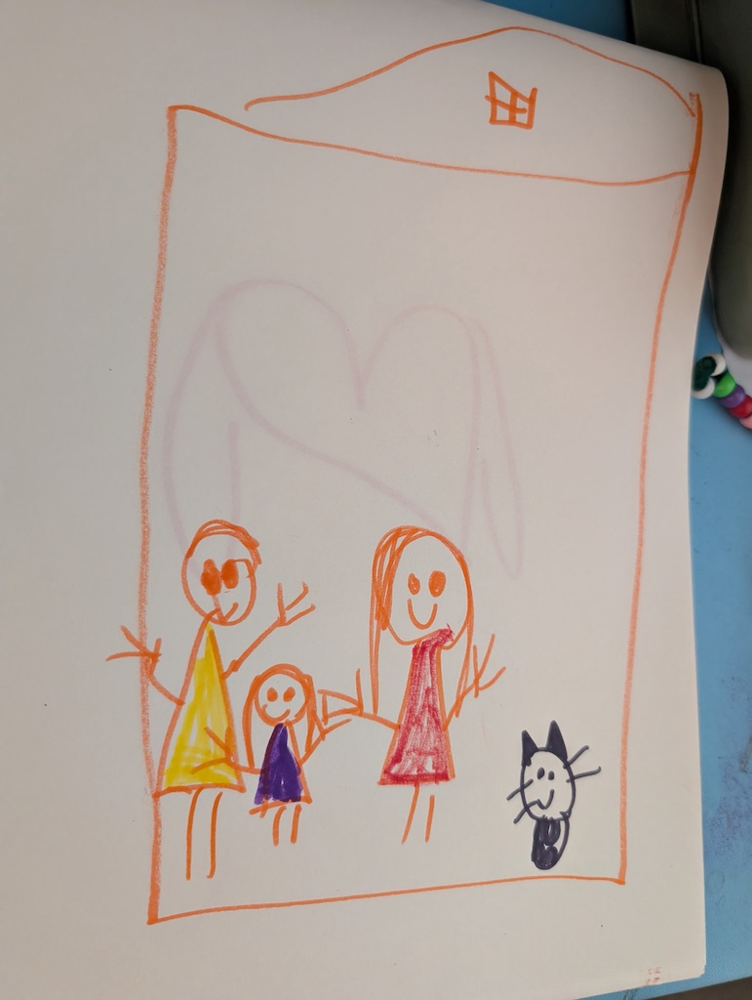
Z has grown by leaps and bounds this year, including the huge milestone of leaving daycare and starting public school. She made the transition with aplomb—far, far more than her parents—and at this point is excited every Sunday evening to go back to school the next morning. I’m sure that will wane at some age or other, but for now it’s pretty neat. She’s making friends, loves her teachers, and really seems to enjoy the atmosphere.
We’ve slowly expanded the activities she’s involved in as well, but not so much that anyone feels overwhelmed (we hope). We want her to experience everything she can, but at the same time want to avoid the deluge of extracurriculars that seems to be the norm lately. It’s a tough balance to strike, but we’re trying to watch her for cues.
Seriously, I’m going to blink and she’ll be a teenager.
Friends
This year was so wonderful when it came to seeing and spending time with friends. I deepened several friendships—including with fellow dads, which I feel like is a challenge for guys at my particular life stage.
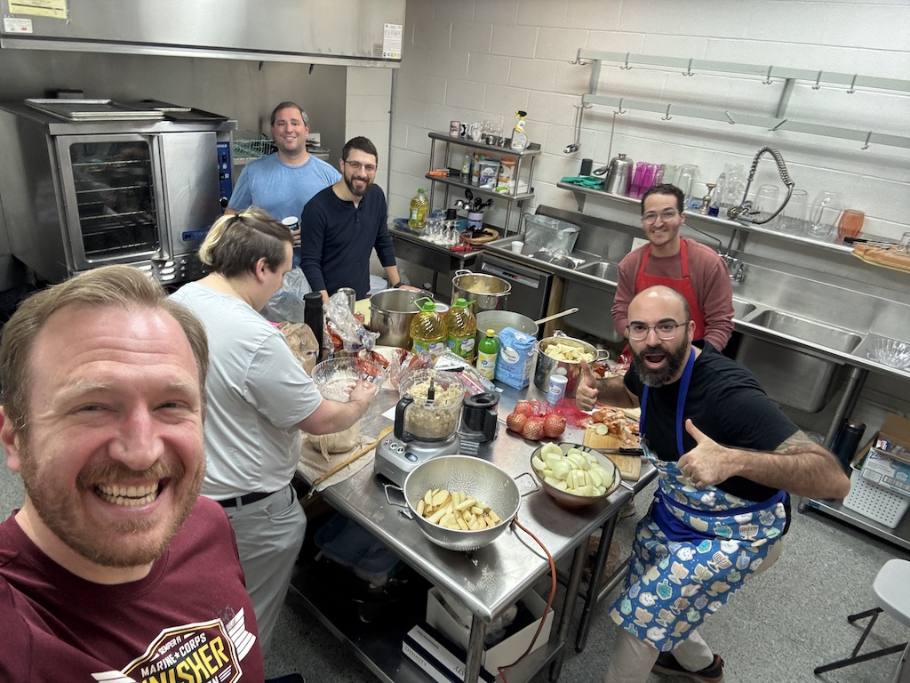
We even entertained The Danimal at our house for a few days. Long gone are the days of seeing each other every day at school; now we’re lucky to chat once or twice a month. But Z certainly approved of Uncle Danimal, so we’ll absolutely be going up to Wisconsin to pay him a visit sometime.
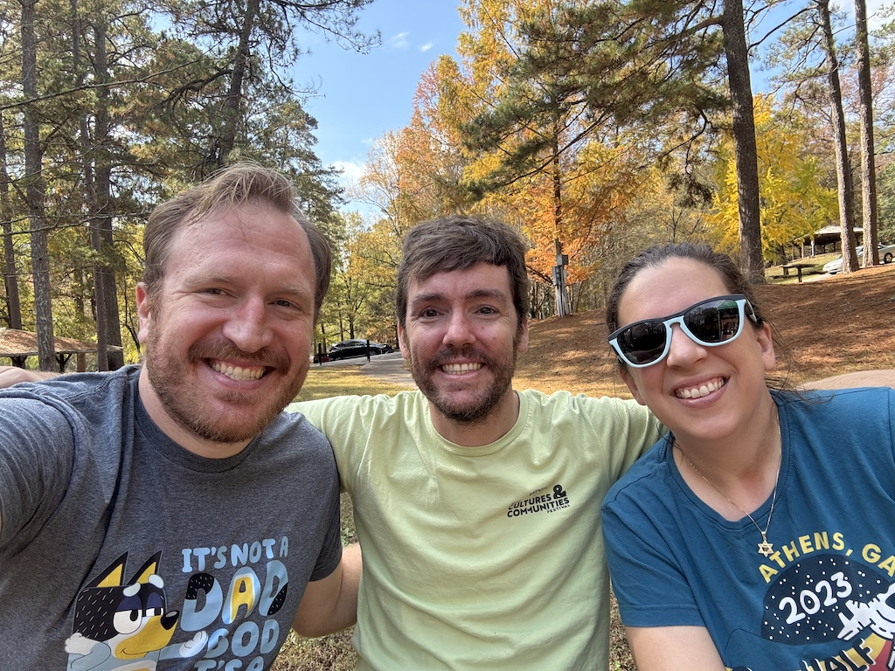
We also prioritized running with friends this year, which is something I’ll be carrying over into 2026 for sure. I lost count of the runs—especially in the summer, but all year round—that would not have happened or would have been substantially shorter if not for the lovely company.
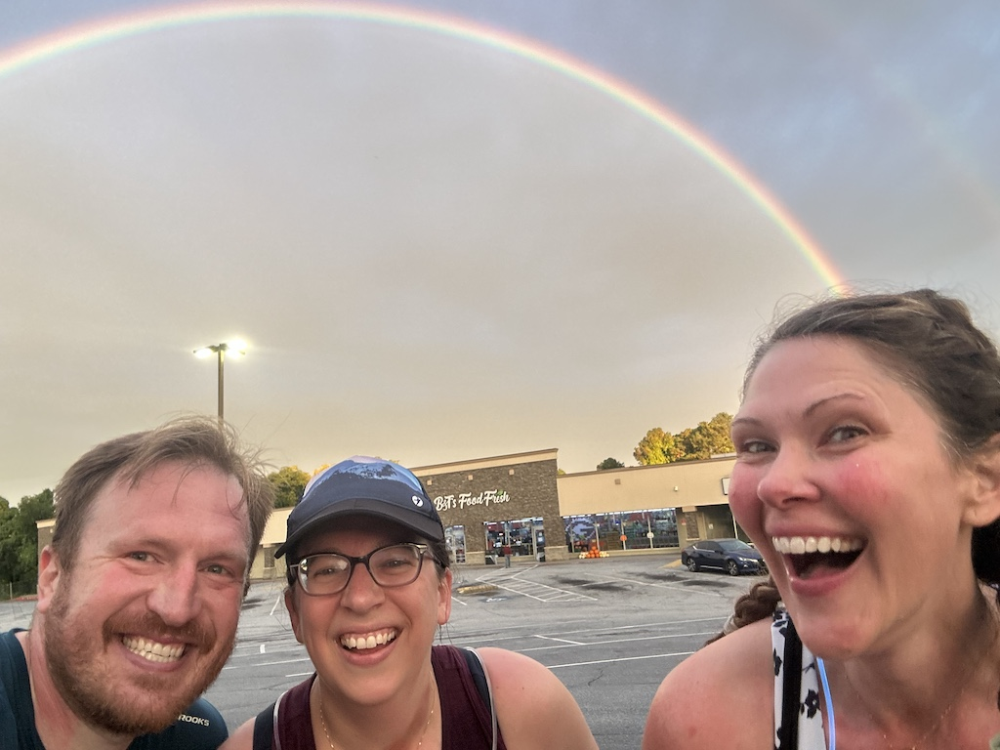
Aging
I turned 40 this year 🥳
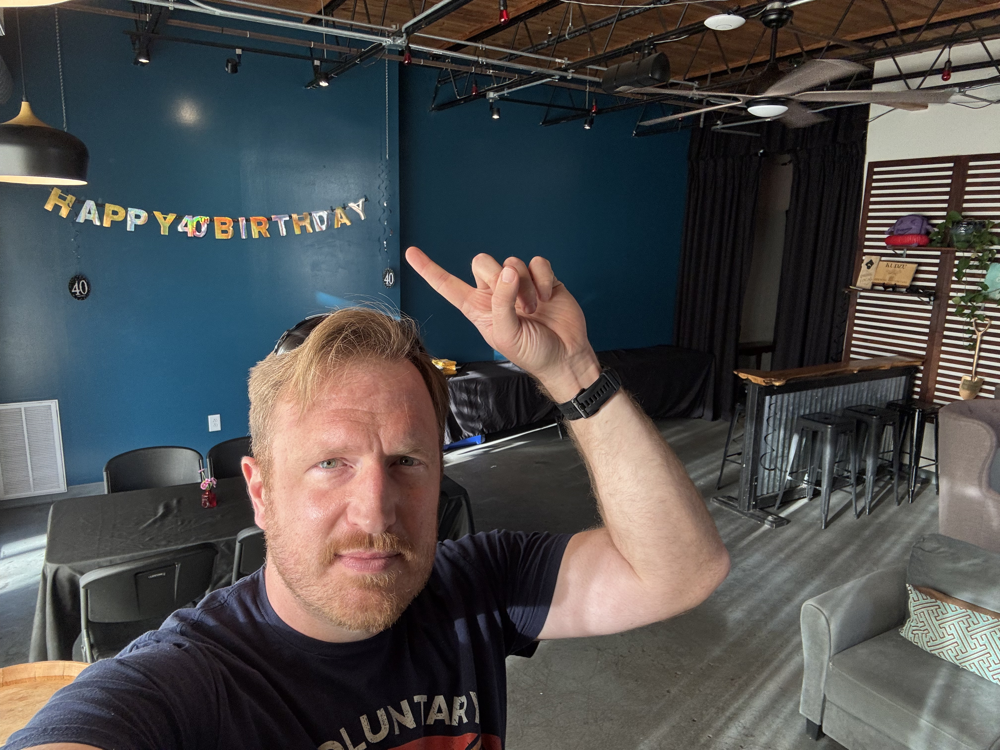
On one hand, that’s pretty cool. On the other, I’m still trying to square this with the fact that the first birthday of my parents’ I have vivid memories of was my dad’s 40th. So yeah, it’s definitely a milestone; good or bad is yet to be seen, I suppose!
But as Cathryn and I have discussed a lot lately: it’s a privilege to grow old (not saying I’m old, just older… oh who am I kidding, I’m OLD), and I’ve seen that even with my own growth. It’s pretty neat to look back at things that held me back or things I thought were important in my 20s and even 30s, and realize I’ve grown since then. Not that those things weren’t important at the time, but rather that I’ve since moved on to other things.
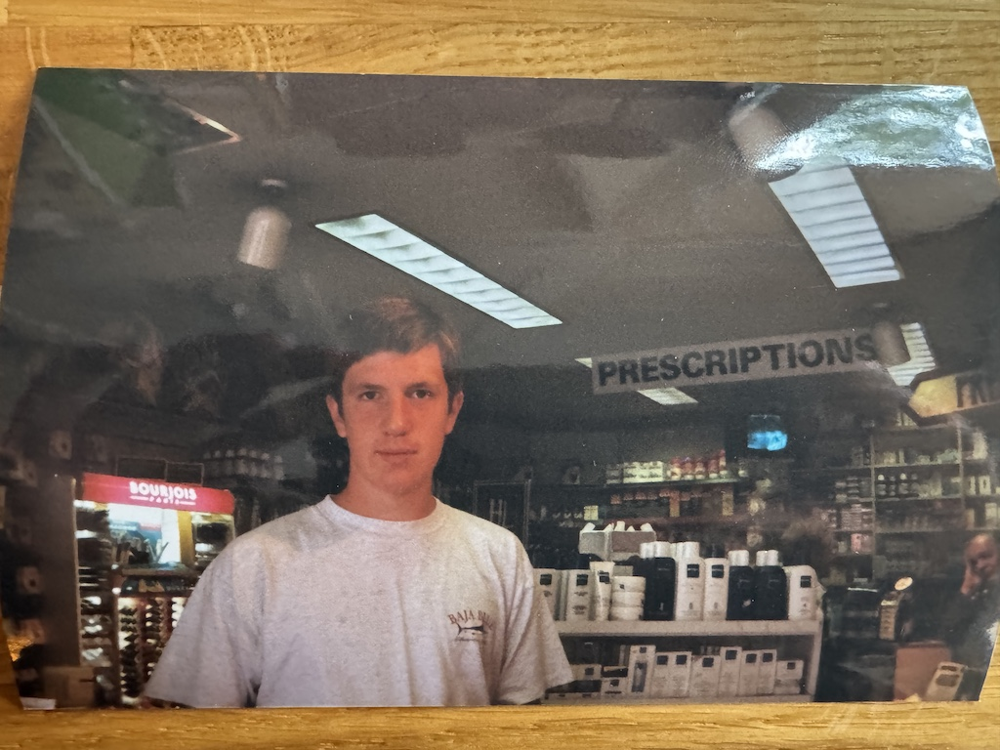
It’s a powerful but also kindly reminder: nothing lasts forever, including the shitty stuff. Seasons of life are the norm, and frankly, I’m pretty thrilled with how things are right now.
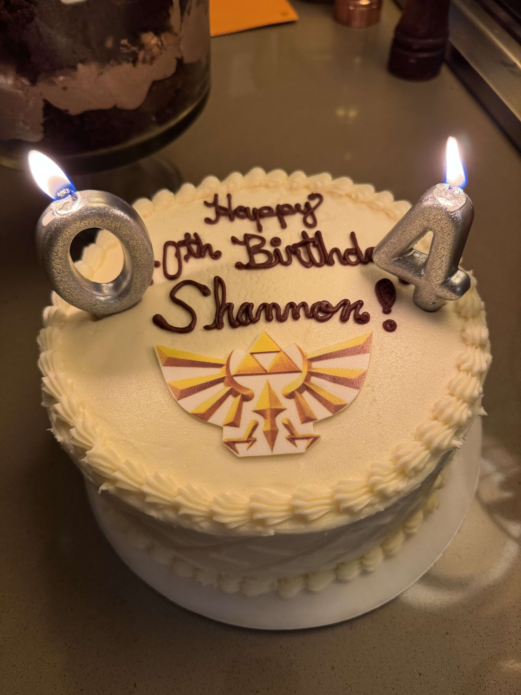
Cleaning
An odd item to put on a list of things I’m grateful for, but we actually made incredible progress this year donating old toys, books, and clothing, and recycling everything else. There’s still a shocking amount of stuff in all three categories, but we made real progress this year for the first time in forever, and it’s felt really good!
I already have a stack of books and clothes that are ready to go in the next wave of donations, though I want to take another pass through both of those to see if there’s anything else to add before taking them out. Any way to keep things out of the landfill is a good way, I think.
Hobbies
This is easily one of the parts of 2025 I’m most thankful for: the return of hobbies. I’ve made more progress on my personal hobbies in the past 6 months than in the 6 years before that.
Seriously: the wonders of a not-burned-out brain cannot be overstated (also the right meds. also therapy. also exercise. also sleep.).
Just to quickly list a few things I’m grateful for:
- I attended a minis-painting workshop at the local game shop, and it was a blast. I’m hoping to do more of this at home in 2026. For me, it’s less painting the minis for something (e.g., a tabletop game), and more… just the act of painting. It’s soothing and quieting, and I love it.
- I’m a little ways into Age of Imprisonment and absolutely loving it. Seriously, it’s so fun and well-done.
- For whenever I’m able to play again, I bought myself the Super Star Destroyer unit for Star Wars: Armada. It is obscene how big this thing is, which is why I really wanted it, lol. It was a gift to myself when I started the new Valo gig.
- I’ve made quantum leaps of progress on my homelab setup. Too much to list out exhaustively, so a few higlights: made substantial hardware improvements, mostly around networking; a whole ecosystem of local services, including a media server of our owned movies and TV shows ripped from DVDs; Nextcloud as a Dropbox replacement.
And yes, before you ask: it is absolutely a resolution of mine to get back to homelab blogging!
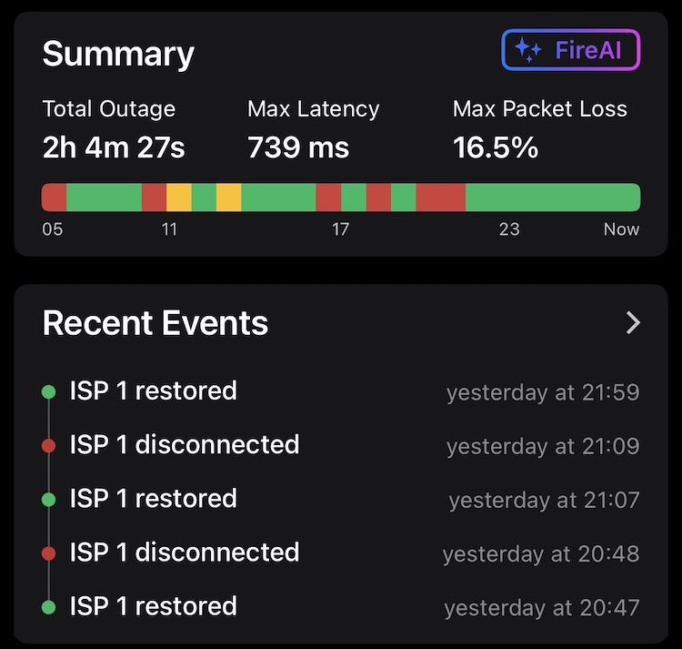
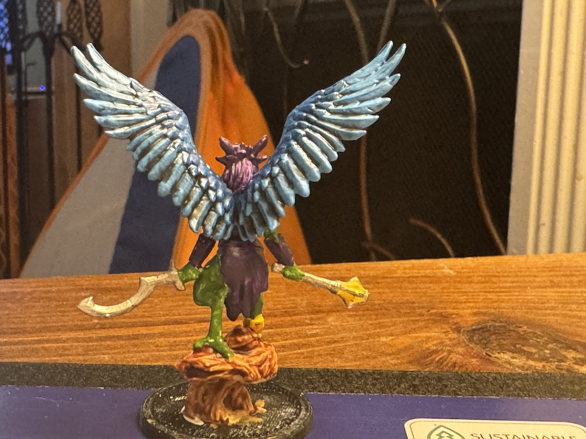

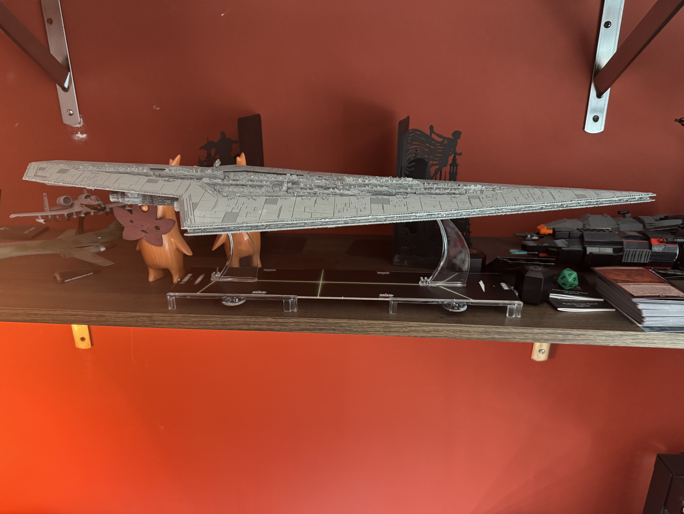
The mountains
As has been an annual tradition for some time now, we took a family trip to the Blue Ridge mountains in October.
It was beautiful. Fall is, hands down, my favorite time of year to go to the mountains 🍁🍂
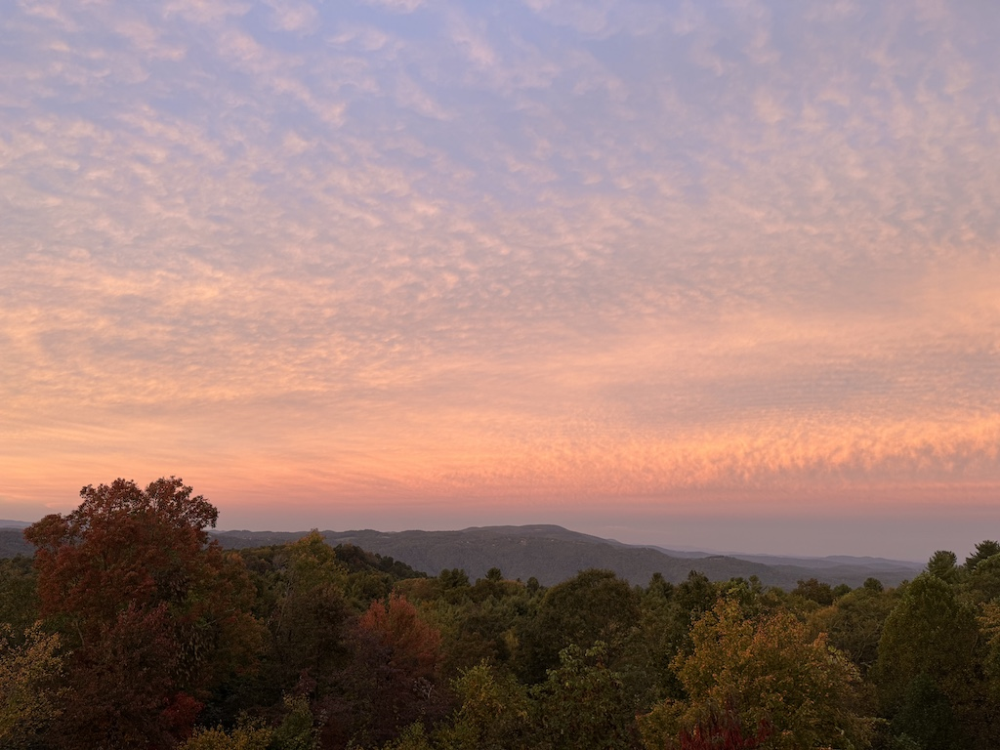
We’d originally planned to take this trip with another couple, but they had a schedule conflict at the last minute; a backup also had to drop out. To be fair, the timing of the trip wasn’t great: it coincided with Z’s fall break, which itself overlapped with seemingly no one else’s vacation time. So we ended up going by ourselves, and having a lovely time.
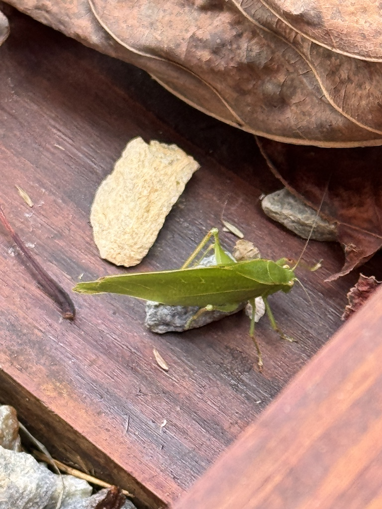
Earlier in the year, we made it out to Colorado Springs for a cousin’s wedding. It was a perfect excuse to escape the Georgia heat and humidity in July, plus we got to see even more mountains. Colorado has always been one of those places I’d strongly consider moving to, if the opportunity ever arose.
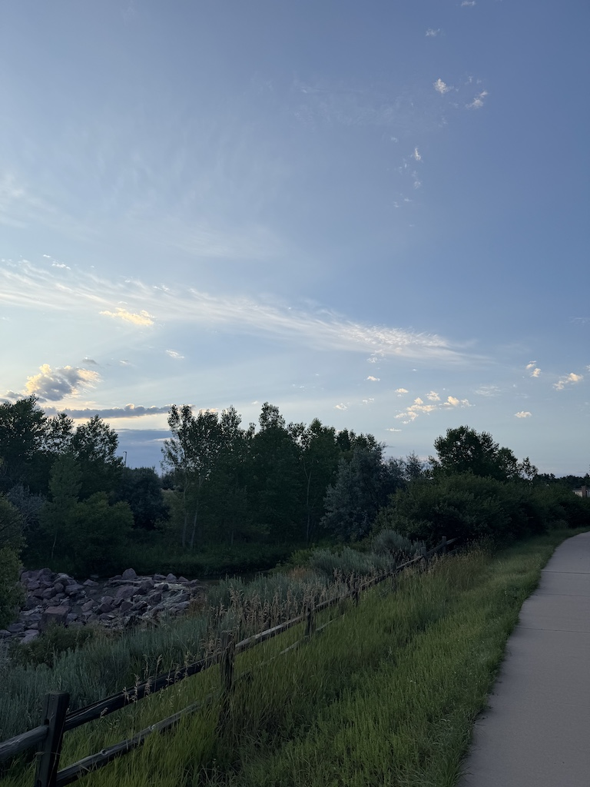
Across the board, we took more trips in 2025 than any year pre-Z and pre-COVID. It’s not a universally positive milestone—hello, COVID! 👋🦠—but it’s been nice to travel around again.
It’s a dream of mine to retire to a cabin somewhere in a small mountain town. The mountains will always call to us.
Fucking cool airplanes
For the second time in three years, we hit up the Cleveland Air Show, and it didn’t disappoint.
Summary of 2025
It should go without saying, but I’ll say it anyway: this post is a highlight reel. It omits a fuckton of very real, very ongoing, very negative things that happened, both personally and more broadly. The fact that everything I’ve listed here is universally positive is an editorial choice, not a statement of complete and unvarnished fact. It’s what I’m grateful for, in a year that saw a lot of shit go down.
But several times in the back half of the year when I was asked “how are you” and I stopped to think for a few seconds (because, while it’s probably a sign of neurodivergence, I just hate the canned “good, and you” triteness of smalltalk)… and honestly, felt like I was doing really well.
If anything, the fact that there are things and people to be grateful for in a year like 2025 is proof that daring to believe a better world can exist isn’t a fruitless exercise, but is in fact a prerequisite to improvement. After so many years stuck in the rut of tenure-track burnout but terrified of non-tenured industry positions, I jumped ship anyway and landed in a place that I truly didn’t think could exist in our current post-capitalist hellscape: a job that I wake up excited for, where trying to make real people’s lives better is in my job description, alongside colleagues who are some of the smartest and loveliest human beings I’ve met.
It’s also become clear that success isn’t binary: just showing up is a win. My first lifting session with my trainer at the Y was a garbage fire—I flamed out hard after about 25 minutes (I haven’t lifted with that level of intensity since maybe high school football??). But 25 minutes was better than 0, and I completed the full hour-long session just the following week.
Every run this year that was less mileage than originally planned was still a run where I got more than 0 miles. I kept grinding.
And my Valo supervisor loves iteration: he’s happy as long as I have a thing to update on. Usually, I have a lot more than that, but an update is all he’s looking for. Talk about liberating!
And yeah: I submitted over 100 job applications in the first six months of 2025, and landed my fucking dream job at the end of it. There was a lot wrong with 2025, but it’s only failure if we quit showing up.
2026? More like 2020-bitch
This made me laugh, not entirely in a happy way:
I haven’t done resolutions for the past few years now; I agree with an old post stating that resolutions are tailor-made for setting one up for failure. For year-long efforts, it’s actually better (for me at least) to set ambitious-but-attainable general objectives, and as the year progresses, break those down into actionable items that I can knock out in reasonable time frames.
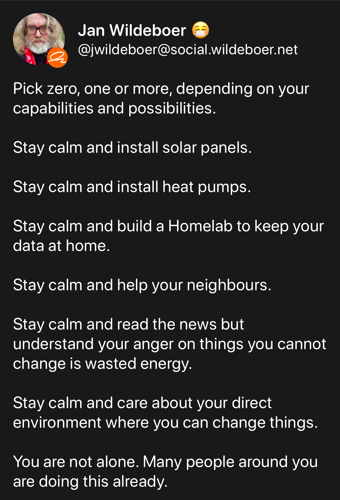
So here are my general thoughts for efforts I’d like to make in 2026. I made a lot of progress in 2025 on personal health and setting work/life boundaries, and no other area has seen more of a benefit than in managing my burnout: my brain is firing like it hasn’t in nearly a decade. So whatever I’m doing, I definitely want to keep doing it.
- Once more, for the cheap seats: 1000 miles running!
- At least 2024-levels of lifting weights (should easily exceed this, tbh).
- I’ve started cleaning the upstairs office and it’s going well; I want to finish that and then knock out the garage as well!
- Get a group of dudes together for a round of Star Wars: Armada. Gotta put that Super Star Destroyer through the paces!
- Kick ass at the new gig (promotion at the 1-year mark??).
- Make daytime breaks / mindfulness meditation a regular practice. More generally, active and prioritized efforts to stay in the present.
Here goes everything, I suppose. I wish everyone else a happy and healthy 2026 ❤️
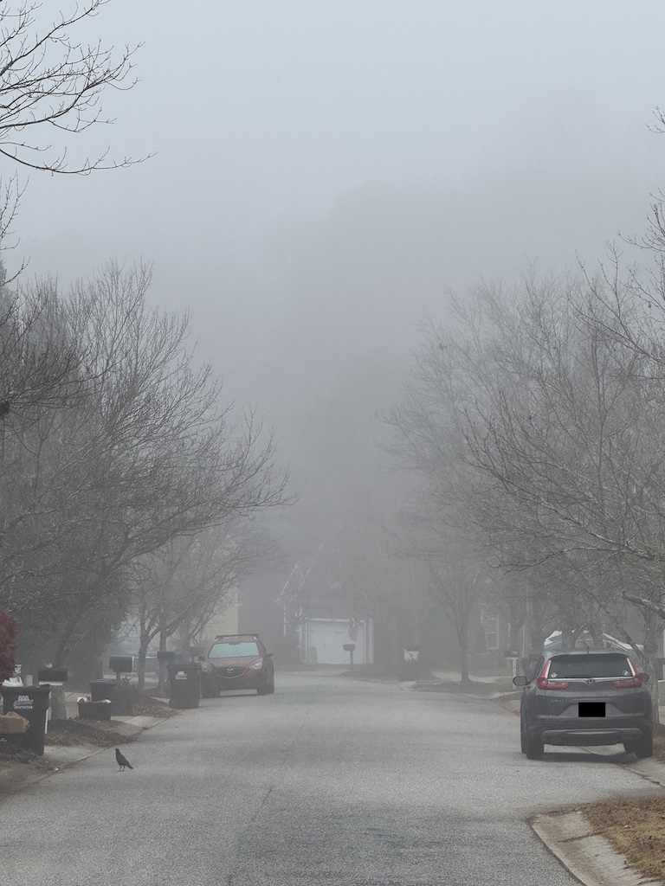
Footnotes
If you are so interested: 2024, 2023, and 2022 retrospectives.↩︎
If you’re a dude who is considering this, I’d be happy to talk about my experience! That was the single most helpful thing I did beforehand 😅↩︎
Yeah, we’ve been hitting the Frozen franchise pretty hard lately, but the movies freakin’ rock, especially the second one IMHO.↩︎
Citation
@online{quinn2026,
author = {Quinn, Shannon},
title = {You Don’t Have to Go Home},
date = {2026-01-03},
url = {https://magsol.github.io/2026-01-03-new-years},
langid = {en}
}